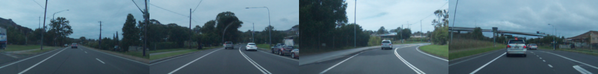

1 · Datos
commaVQ: video de manejo real, comprimido en tokens
- 100.000 minutos de manejo real (comma.ai, licencia MIT). Segmentos de 1 min a 20 FPS.
- Cada frame pasa por un VQ-VAE: un autoencoder con espacio latente discreto (codebook de 1.024 vectores).
- Resultado: una grilla 8x16 = 128 tokens por frame. El decoder vuelve de tokens a imagen.
- Incluye el GPT de comma (~300M parámetros, entrenado con 3M minutos): nuestra referencia.
40%de los tokens repiten el del frame anterior en la misma celda
2.500segmentos de train (1 de 40 shards). Val: 100 segmentos oficiales


Frames reales de val, decodificados con el decoder de commaVQ.